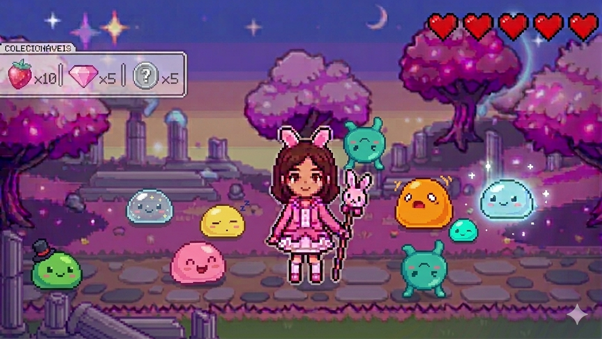
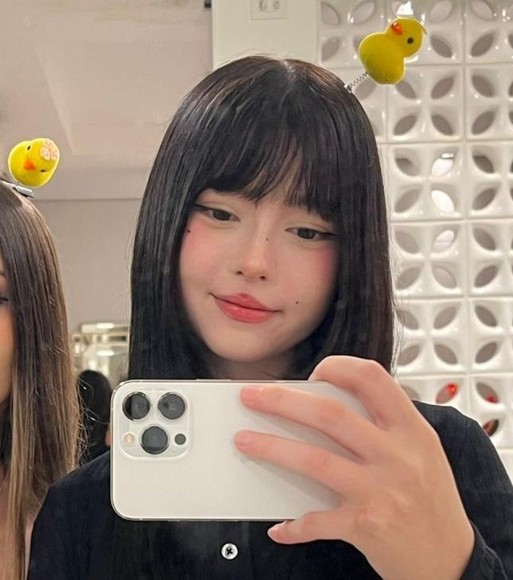

Sobre
A história por trás dos pixels e sonhos

Pink Pixel Dreams é um jogo indie de exploração com estética fofa e pixel art, criado com muito amor e dedicação. A ideia nasceu da vontade de criar um espaço atrativo e acolhedor dentro de um jogo — um lugar onde meninas se sintam bem-vindas e livres para sonhar.
Pensado especialmente para quem está chegando agora no mundo dos games, o jogo foi desenvolvido com mecânicas leves e intuitivas, sem violência, sem competição e sem pressão — porque nem todo jogo precisa ser complicado para ser divertido.
O jogo mistura elementos de aventura tranquila e simples, colecionáveis e uma narrativa divertida que vai se revelando aos poucos conforme você explora o mundo.
Pixy
Protagonista · Sonhadora
Uma jovem curiosa que acordou em um mundo de pixels e sonhos sem se lembrar de como chegou lá. Guiada por sua curiosidade, ela parte em uma jornada para recuperar seus fragmentos de memória e encontrar o caminho de volta para casa.
O mundo de Pink Pixel Dreams é um lugar mágico e colorido, cheio de segredos esperando para serem descobertos. Cada região tem sua própria atmosfera e mistérios escondidos entre flores, morangos, estrelas e pixels. Quanto mais você explora, mais esse mundo encantado se revela — e cada cantinho guarda uma história especial só para você!

Mariana Mayer
Cursando TADS — Tecnologia em Análise e Desenvolvimento de Sistemas
"Tenho 18 anos e esse é o meu primeiro jogo, sou apaixonada por músicas e jogos singleplayer, no qual posso explorar as coisas no meu tempo. Pink Pixel Dreams é um projeto feito com muito carinho, voltado para meninas mais novas e que não possuem afinidade com jogos violentos e competitivos."